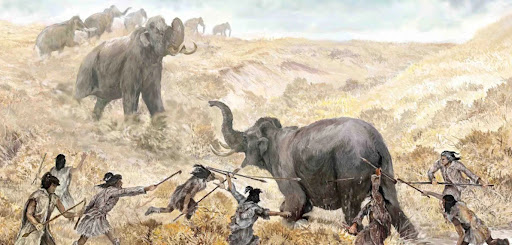
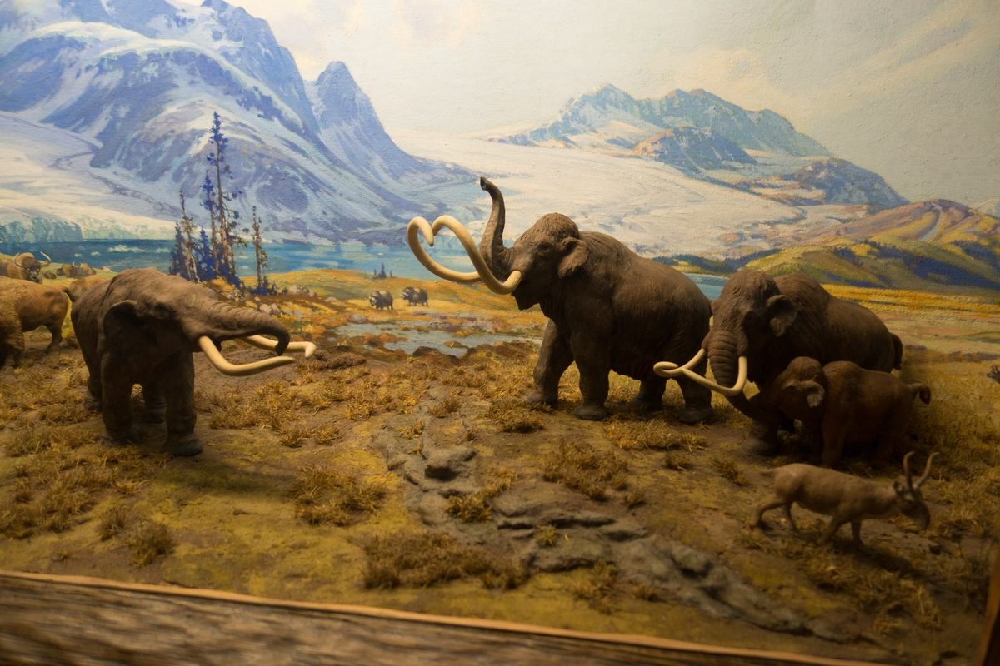

The extinction of the Mastodon can be broken down to three possible scenarios...
The extinction of the Mastodon can be broken down to three possible scenarios...
The extinction of the Mastodon can be broken down to three possible scenarios...
 They were hunted to extinction by early humans.
 The environment changed too fast for them to adapt to.
 Somewhere inbetween; they were excessively hunted and they couldn't adapt fast enough to changes in the environment.
Somewhere inbetween; they were excessively hunted and they couldn't adapt fast enough to changes in the environment.